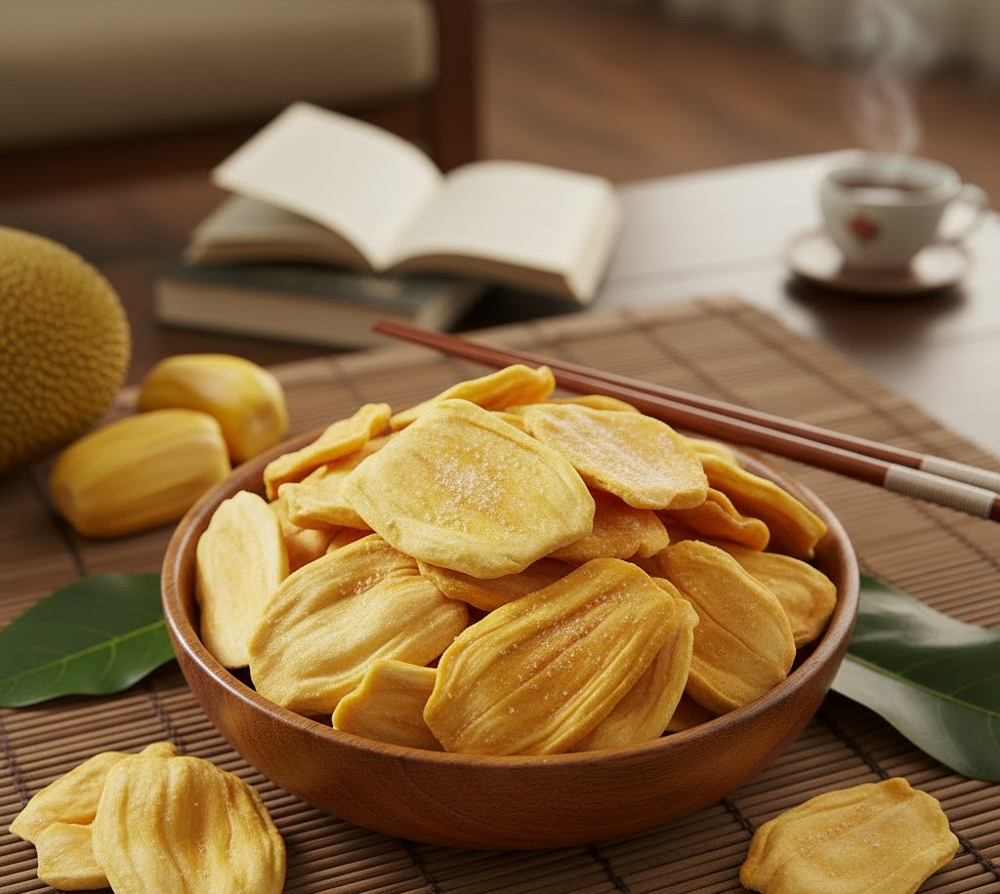
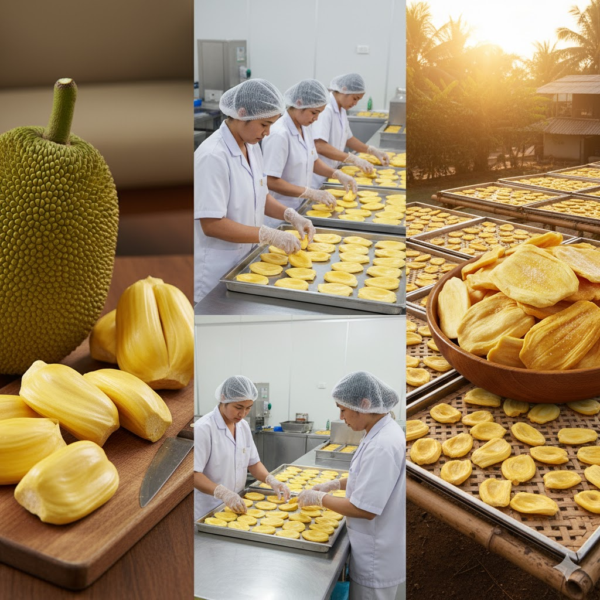
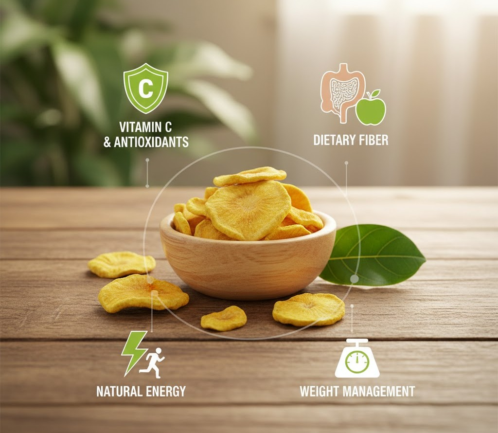
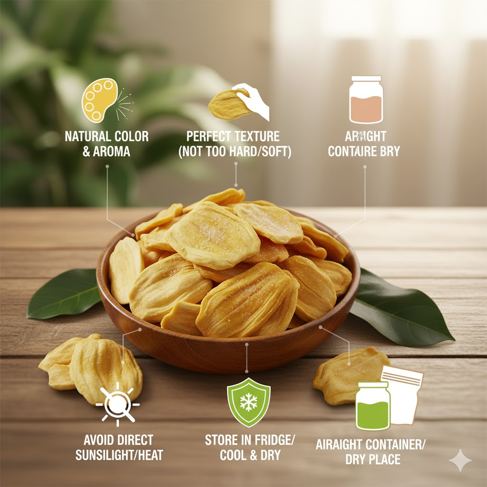

Mít sấy – Món ăn vặt hấp dẫn cho mọi nhà từ tự nhiên đến bàn tiệc

Mít sấy đã trở thành một món ăn vặt cực kỳ được ưa chuộng tại Việt Nam. Khác với mít tươi, mít sấy giữ được hương vị tự nhiên, độ giòn – dẻo đặc trưng và đặc biệt là bảo quản lâu, phù hợp sử dụng tại nhà, mang đi làm hoặc làm quà tặng.
Nguồn gốc & quy trình chế biến


Quy trình sấy hiện đại sử dụng nhiệt độ thấp giúp hạn chế mất dưỡng chất, giữ màu đẹp và mùi thơm tự nhiên. Mít thành phẩm giòn nhẹ, ngọt tự nhiên, không bị cháy khét.
Lợi ích sức khỏe
Mít sấy chứa vitamin, chất xơ, hợp chất chống oxy hóa – hỗ trợ tiêu hóa và tăng cường miễn dịch.
Mẹo ăn “healthy”: ưu tiên loại ít đường, không chiên dầu lại, ăn kèm hạt – sữa chua.
Cách chọn & bảo quản chuẩn
- Màu vàng tự nhiên, không mùi lạ.
- Bảo quản nơi khô ráo, kín khí.
- Dùng trong 1–3 tháng tùy đóng gói.
- Có thể sấy nhẹ để lấy lại độ giòn.

Công thức biến tấu ngon – tiện
- Parfait sữa chua – hạt – mít sấy.
- Mít sấy rang mật ong.
- Trộn vụn mít vào bánh quy.
- Làm topping trà – sinh tố.
Tham khảo mít sấy chính hãng của Mít Sấy Vũ Trụ.
Kết luận
Mít sấy là món ăn vặt lý tưởng – ngon, tiện, dễ bảo quản và nhiều lợi ích. Chọn đúng & bảo quản chuẩn sẽ giữ vị ngon tối ưu.